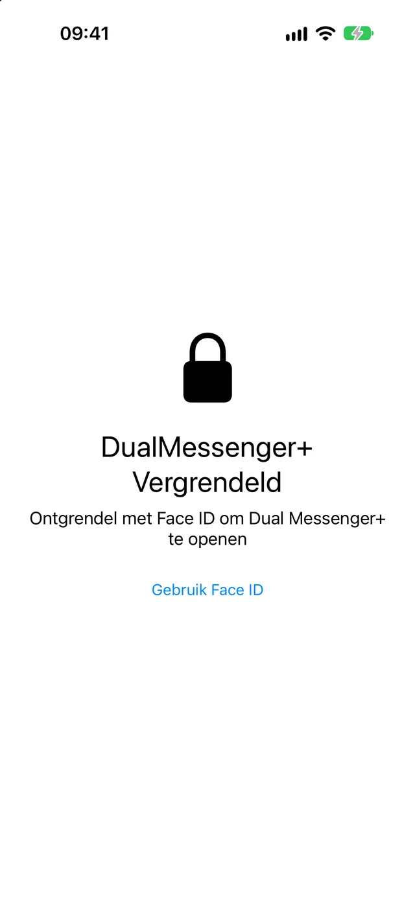
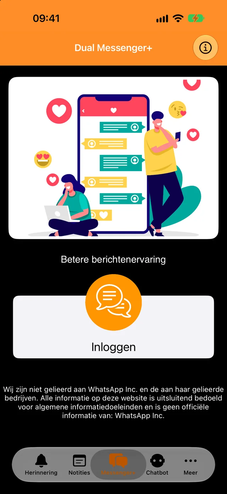
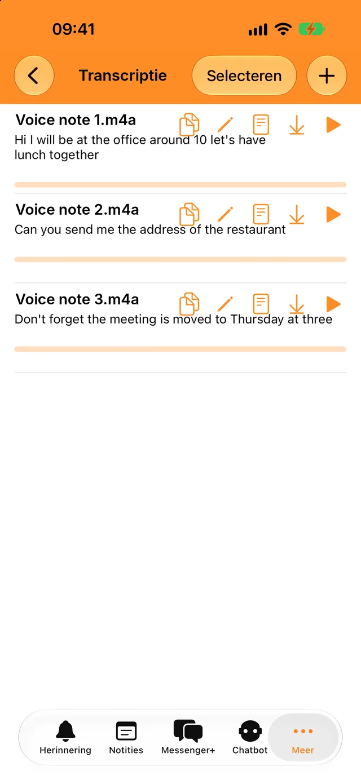
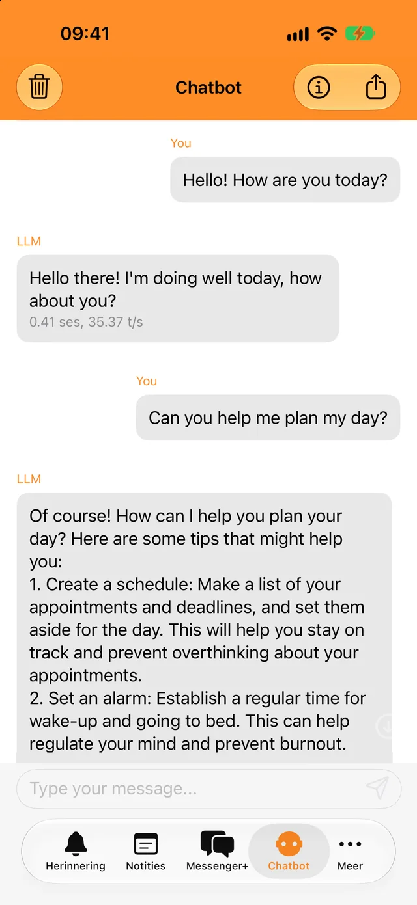
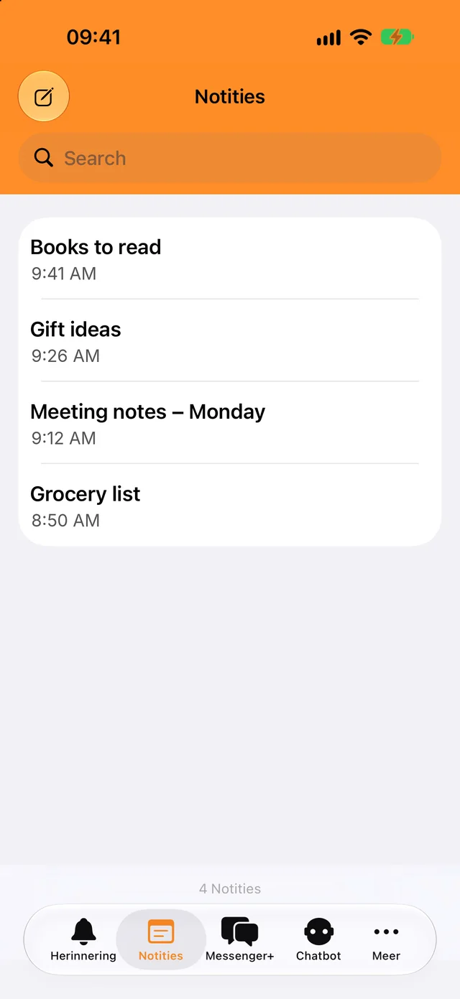

Vergrendel met Face ID of je toegangscode
Alleen jij kunt de app en je chats openen. Kies of de app direct wordt vergrendeld of pas na een paar minuten.
Voeg je tweede account in seconden toe en houd werk en privé gescheiden.
Gratis te downloaden. Voor iPhone, iPad en iPhone Duo.

Een slot op je chats en een paar handige tools voor elke dag, ingebouwd in dezelfde app.

Alleen jij kunt de app en je chats openen. Kies of de app direct wordt vergrendeld of pas na een paar minuten.

Transcribeer spraakberichten en audiobestanden in je eigen taal en kopieer de tekst waar je maar wilt.

Stel snelle vragen, ook offline. Je gesprekken met de bot verlaten je telefoon nooit.

Schrijf dingen op, vind ze terug met de zoekfunctie en krijg een melding wanneer het tijd is voor een herinnering.
Je hebt de telefoon met je tweede WhatsApp-account alleen even nodig.
Tik op Inloggen. Er verschijnt een QR-code op het scherm.
Ga naar Instellingen, dan naar Gekoppelde apparaten en tik op Apparaat koppelen.
Richt die telefoon op de QR-code. Je chats worden geopend in Dual Messenger+.
WhatsApp houdt een gekoppeld apparaat ingelogd zolang je WhatsApp minstens één keer per 14 dagen op je telefoon gebruikt.
Dual Messenger+ heeft geen servers die je berichten zien. Je hoeft geen account aan te maken en de app bevat geen advertenties of trackers.
Notities, herinneringen, opnames en gesprekken met de bot worden op je iPhone of iPad bewaard.
Je geeft ons geen naam, e-mailadres of telefoonnummer.
Face ID en Touch ID worden door je apparaat afgehandeld. De app ontvangt nooit biometrische gegevens.
Download Dual Messenger+ voor iPhone en iPad.
Download in de App Store